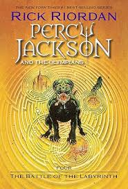

A Batalha do Labirinto

O Monte Olimpo está em perigo. Cronos, o perverso titã que foi destronado e feito em pedaços pelos doze deuses olimpianos, prepara um retorno triunfal.
O primeiro passo de suas tropas será atacar e destruir o campo de treinamento dos heróis — filhos de deuses com mortais — que desde a Grécia Antiga combatem em defesa dos olimpianos.
Para assegurar que o Acampamento Meio-Sangue não seja invadido, Percy Jackson, Tyson, Annabeth e Grover são destacados para deter as forças de Cronos antes que se aproximem do acampamento, no emaranhado de corredores do temido Labirinto de Dédalo — um universo subterrâneo repleto de surpresas e perigos.